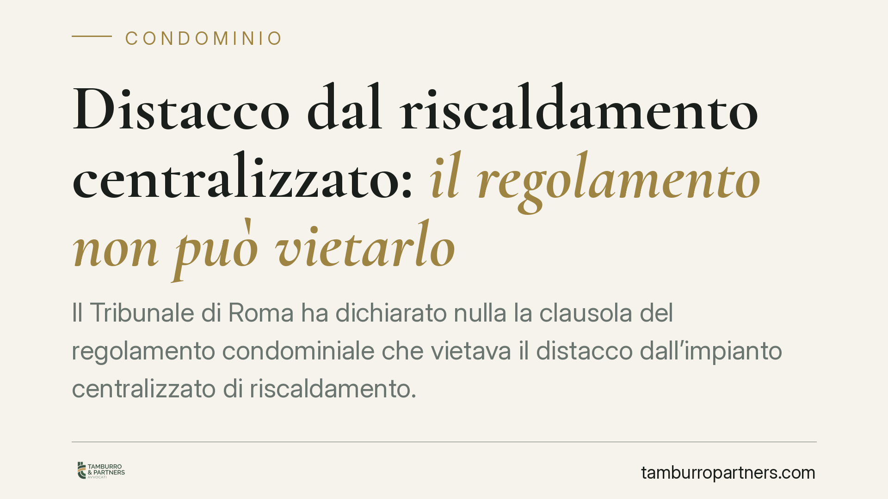

Distacco dal riscaldamento centralizzato: il regolamento non può vietarlo
Il Tribunale di Roma ha dichiarato nulla la clausola del regolamento condominiale che vietava il distacco dall'impianto centralizzato di riscaldamento. La pronuncia conferma un principio ormai consolidato: il condomino può staccarsi, ma non si libera di tutte le spese. Vediamo cosa resta a suo carico e perché la distinzione tra consumi volontari e involontari è decisiva.

Il caso
Una condomina aveva chiesto di distaccarsi dall'impianto centralizzato di riscaldamento per servirsi di un sistema autonomo. Il regolamento condominiale, però, conteneva una clausola che vietava espressamente il distacco. Il condominio si opponeva alla richiesta facendo leva proprio su quella previsione.
Il Tribunale di Roma ha dato torto al condominio: la clausola è nulla. Il distacco è legittimo, ma la condomina resta obbligata a contribuire ad alcune voci di spesa. È su questo equilibrio che vale la pena soffermarsi.
Inquadramento normativo
Il punto di partenza è l'art. 1138 c.c., che individua i limiti del regolamento condominiale. Il regolamento non può incidere sui diritti di ciascun condomino sulle proprie unità immobiliari né sui diritti riconosciuti dalla legge. La facoltà di distacco dall'impianto centralizzato rientra tra questi diritti: una clausola che la vieta in modo assoluto confligge con norme inderogabili ed è perciò nulla.
La nullità, a differenza dell'annullabilità prevista per le delibere viziate dall'art. 1137 c.c., può essere fatta valere senza limiti di tempo e da chiunque vi abbia interesse. Non occorre impugnare entro trenta giorni, come avviene invece per le delibere semplicemente annullabili: la clausola nulla è tamquam non esset, come se non ci fosse.
Resta però la regola, oggi codificata, secondo cui il condomino può rinunciare all'uso dell'impianto centralizzato solo se dal distacco non derivano notevoli squilibri di funzionamento o aggravi di spesa per gli altri condomini. Il distacco va provato sotto il profilo tecnico, di norma con una relazione di un professionista.
Implicazioni pratiche
La decisione conferma la distinzione fondamentale tra due categorie di consumo.
I consumi volontari sono quelli legati all'effettivo utilizzo del calore. Il condomino distaccato non li deve, perché non preleva più energia dall'impianto comune.
I consumi involontari sono invece le dispersioni di rete e il mantenimento in funzione dell'impianto a beneficio dell'intero edificio. Questi restano a carico anche di chi si è staccato, perché l'impianto continua a servire parti comuni e a disperdere calore che interessa tutti.
A ciò si aggiungono le spese di manutenzione straordinaria e di conservazione dell'impianto. Il distacco incide sull'uso, non sulla comproprietà: l'impianto resta bene comune e chi si è staccato continua a parteciparne la titolarità. Di conseguenza concorre alle spese necessarie a conservarlo.
In sintesi, il distacco riduce la bolletta ma non la azzera. Chi immagina di non pagare più nulla parte da un presupposto errato.
Cosa fare in concreto
- Verifica il regolamento, ma non fermarti al divieto. Se contiene una clausola che vieta il distacco, considera che può essere nulla: non è un ostacolo insuperabile.
- Fai redigere una relazione tecnica. Serve a dimostrare che il distacco non provoca squilibri di funzionamento né aggravi di spesa per gli altri condomini. È il presupposto della legittimità.
- Comunica il distacco al condominio e all'amministratore in forma scritta, allegando la documentazione tecnica. La tracciabilità è decisiva in caso di contenzioso.
- Metti in conto le spese residue. Consigliamo di quantificare in anticipo consumi involontari, manutenzione straordinaria e conservazione, per evitare contestazioni sui conguagli.
- Se l'assemblea delibera addebiti impropri, valuta i tempi di reazione. Le delibere annullabili vanno impugnate entro trenta giorni dalla comunicazione; non attendere.
La pronuncia del Tribunale di Roma non introduce regole nuove, ma ribadisce un assetto che spesso viene frainteso in assemblea. Il diritto al distacco è tutelato; il dovere di contribuire alle spese comuni dell'impianto pure. Conoscere entrambi i lati evita decisioni affrettate e contenziosi evitabili.
Disclaimer
Contributo informativo a cura di Tamburro & Partners - Avv. Giuseppe Tamburro. Non costituisce parere legale.
Ogni condominio ha una storia a sé.
Se gestisci un'amministrazione e vuoi un confronto su una specifica questione condominiale, scrivi allo studio. Ti rispondiamo entro un giorno lavorativo.